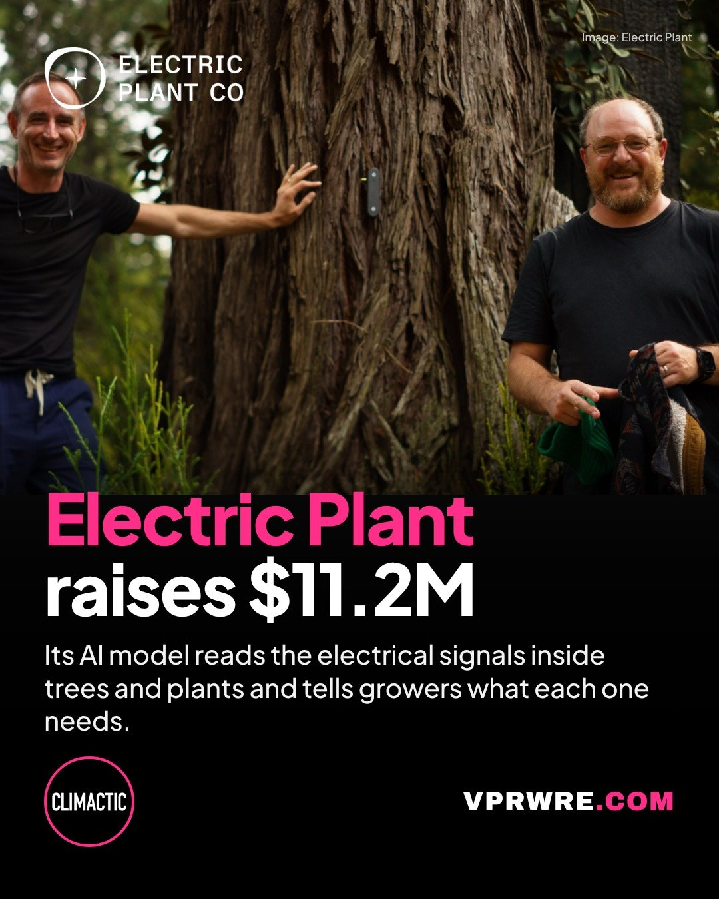

Funding
Electric Plant raises $11.2M
Electric Plant raised an $11.2 million seed round led by Onto Ventures and Climactic. Plants send electrical signals through their stems, and the startup’s AI model, Bombadil, reads them from small sensors attached to the plant with stainless steel screws and tells growers what each plant needs, so they can adjust watering or fertilizer. CEO Justin Mast says the model was trained on about 125 species, from ferns and redwoods to tomatoes and dahlias, and that the system can boost yields while cutting water use by 20% or more.

FUN FACT: The sensors cost “tens of dollars,” Mast says, while existing tools generally cost thousands, and a couple of sensors per acre is enough.
FOUNDERS: Justin Mast (CEO), Lee von Kraus (neuroscientist who has worked with DARPA)
INVESTORS: Onto Ventures, Climactic, Ponderosa, Endeavor Catalyst, Ludlow, Michigan Rise, The Fund, Schox VC, Dug Song
AMOUNT: $11,200,000
HQ: San Francisco, California
The carousel
2 slides · Open on Instagram
Disclosure: VPRWRE drafts with Claude, Anthropic’s AI.